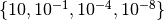

Introduction¶
COmparing Continuous Optimisers (COCO) is a tool for benchmarking algorithms for black-box optimisation. COCO facilitates systematic experimentation in the field of continuous optimization.
{kind=link}
The pictures show (a) a scatterplot of run lengths (log10-scale) comparing two algorithms in different dimensions on a single function, (b) the run length distribution of two algorithms for different target difficulties  on a set of 24 functions and (c) box-whisker plots of the loss ratios of the expected run length compared to best (shortest) observed expected run length in BBOB-2009.
COCO has been used in several Black-Box Optimization Benchmarking (BBOB) workshops at the GECCO conference, the first in 2009 (BBOB-2009). Overall around a 100 articles and algorithms have been benchmarked.
COCO provides:
- an experimental framework for testing the algorithms,
- post-processing facilities for generating publication quality figures and tables,
- LaTeX templates of articles which present the figures and tables in a single document.
The practitioner in continuous optimization who wants to benchmark one or many algorithms has to download COCO, plug the algorithm(s) into the provided experimental template and use the post-processing tools.
The COCO software is composed of two parts:
- an interface available in different programming languages which allows to run and log experiments on multiple test functions; testbeds of functions (noisy and noiseless) are provided
- a Python tool for generating figures and tables that can be used in the LaTeX templates.
The typical user of COCO renders the interface of the considered algorithm compatible with COCOs interface of the objective/fitness function, runs the provided main script (most presumably several times with increasing allowed maxfunevals until the waiting time becomes infeasible), invokes the postprocessing on the generated data and latexs the provided template.
An extensive documentation of the test functions can be found here.